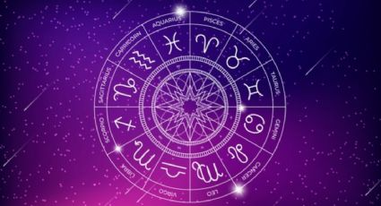

¿Que ves en los cielos?
Al observar el cielo nocturno, podemos ver una hermosa y vasta extensión de puntos luminosos conocidos como estrellas. Estas estrellas pueden variar en brillo y color, creando un espectáculo fascinante. Además de las estrellas, también podemos ver la Luna en diferentes fases, desde la Luna nueva hasta la Luna llena. En algunas ocasiones, podemos ser afortunados y avistar planetas brillantes como Venus, Marte, Júpiter y Saturno.
Si las condiciones son propicias y estamos en un lugar oscuro, también podríamos vislumbrar la Vía Láctea, la cual es una franja brillante formada por innumerables estrellas y polvo cósmico. El cielo nocturno es un recordatorio de la vastedad y belleza del universo que nos rodea.
Cosmologia
La cosmología es la rama de la ciencia que estudia el origen, la evolución y la estructura del universo en su conjunto. Los científicos utilizan observaciones y modelos teóricos para comprender cómo ha evolucionado el universo desde su inicio y qué procesos físicos lo han moldeado. Hay muchas áreas activas de investigación en cosmología, como la búsqueda de la materia oscura, la naturaleza de la energía oscura, la formación de galaxias y la exploración de exoplanetas en busca de vida.
Cometas
Las estrellas son objetos celestes que emiten luz y energía propia debido a reacciones nucleares en sus núcleos. Son bolas de gas caliente que se forman a partir de nubes de gas y polvo en el espacio. Las estrellas varían en tamaño, masa, temperatura y color. Son los componentes básicos de las galaxias y desempeñan un papel fundamental en la evolución del universo. Su estudio nos ayuda a comprender la composición química del universo y su evolución.

Signos
Los signos del zodiaco son una forma de clasificar y categorizar a las personas según la posición del Sol en el momento de su nacimiento. Hay 12 signos en total: Aries, Tauro, Géminis, Cáncer, Leo, Virgo, Libra, Escorpio, Sagitario, Capricornio, Acuario y Piscis. Cada signo tiene atributos y características específicas asociadas a él, y se cree que influyen en la personalidad y el destino de una persona. Los signos del zodiaco se utilizan comúnmente en la astrología para proporcionar información sobre las cualidades individuales y las compatibilidades entre personas.
- Aries (21 de marzo - 19 de abril)
- Tauro (20 de abril - 20 de mayo)
- Géminis (21 de mayo - 20 de junio)
- Cáncer (21 de junio - 22 de julio)
- Leo (23 de julio - 22 de agosto)
- Virgo (23 de agosto - 22 de septiembre)
- Libra (23 de septiembre - 22 de octubre)
- Escorpio (23 de octubre - 21 de noviembre)
- Sagitario (22 de noviembre - 21 de diciembre)
- Capricornio (22 de diciembre - 19 de enero)
- Acuario (20 de enero - 18 de febrero)
- Piscis (19 de febrero - 20 de marzo)
Cada signo del zodiaco tiene características y rasgos distintivos asociados a él, según las creencias de la astrología. Estas características se basan en las cualidades atribuidas a los elementos (fuego, tierra, aire y agua) y las modalidades (cardinal, fijo y mutable) que se asocian con cada signo. Sin embargo, es importante tener en cuenta que la astrología es una creencia subjetiva y no tiene una base científica sólida.
Fuego
Aries, Leo y Sagitario. Los signos de fuego son enérgicos, apasionados y aventureros. Se considera que son dinámicos, impulsivos y tienen una fuerte motivación para alcanzar sus objetivos.
Tierra
Tauro, Virgo y Capricornio. Los signos de tierra son prácticos, estables y centrados en la realidad. Se dice que son trabajadores, persistentes y orientados hacia el logro de metas concretas.
Aire
Géminis, Libra y Acuario. Los signos de aire son comunicativos, sociales y mentales. Se cree que son inteligentes, adaptables y tienen una inclinación hacia el pensamiento lógico y abstracto.
Agua
Cáncer, Escorpio y Piscis. Los signos de agua son emocionales, intuitivos y sensibles. Se considera que son empáticos, imaginativos y tienen una fuerte conexión con sus emociones y las de los demás.